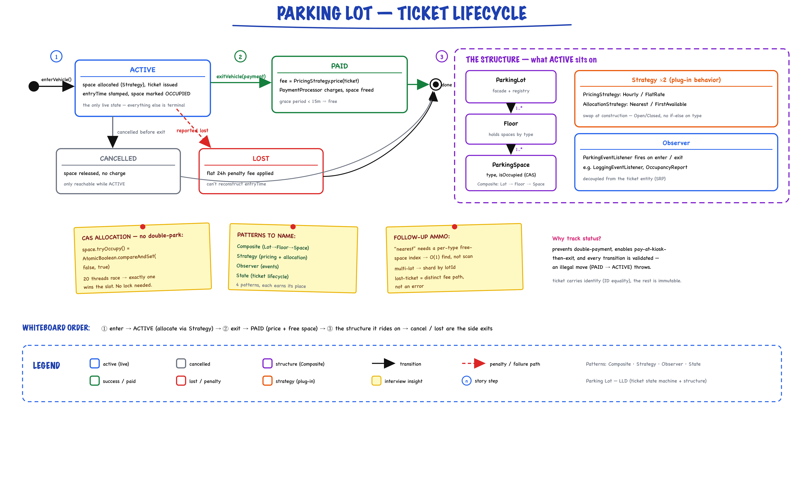

Parking Lot System // LLD
Production-grade low-level design with Strategy (pricing + allocation), State Machine (ticket lifecycle), and thread-safe concurrent operations. 32 files, full working demo.
01 — Requirements
Functional
- Vehicle Entry — validate vehicle type, find suitable space via allocation strategy, generate unique ticket with entry time, update occupancy in real-time
- Vehicle Exit — calculate fee based on duration + pricing strategy, process payment, free parking space, generate receipt
- Space Management — support MOTORCYCLE, COMPACT, LARGE, DISABLED space types mapped to vehicle types (Motorcycle → Motorcycle/Compact/Large, Car → Compact/Large, Truck/Bus → Large)
- Flexible Pricing — hourly with grace period, flat daily rate, peak/off-peak differential, weekend vs weekday, early bird specials
- Payment Processing — multiple methods (Cash, Credit Card, Debit Card, Mobile), validate before exit, handle failures gracefully
- Reporting — real-time occupancy per space type, revenue analytics, average duration per vehicle type, peak utilization tracking
Non-Functional
- Performance — O(1) availability check per vehicle type, O(log n) find available space, < 500ms entry/exit, support 1000+ spaces
- Scalability — multi-floor support, distributed parking lots (multiple locations), horizontal scaling of payment processing
- Reliability — atomic ticket generation (no duplicates), consistent occupancy tracking, ACID payment transactions, lost ticket handling
- Usability — clear error messages for full lot, estimated wait time if full, show nearest available space on entry
02 — Core Entities
| Entity | Type | Key Fields |
|---|---|---|
| ParkingSpace | Entity (final) | spaceId, spaceType, floorNumber, occupied (AtomicBoolean), currentVehicle (volatile) — CAS tryOccupy()/vacate(), canAccept() |
| ParkingTicket | Entity (final) | ticketId, vehicle, parkingSpace, entryTime, exitTime, status (ACTIVE/CLOSED/CANCELLED) — duration(), markExit(), markCancelled() |
| ParkingLot / Floor | Composite (final) | lotId, name, floors, allSpaces / floorNumber, spaces — availableFor(vehicle), occupiedCount(), totalSpaces() |
| Vehicle | Value Object (final) | licenseNumber, vehicleType, hasDisabledPermit |
| Payment | Entity (final) | paymentId, ticket, amount (Money), paymentMethod, status, timestamp, transactionReference |
| OccupancyReport | Value Object (final) | timestamp, totalSpaces, occupiedSpaces, availableByType, occupiedByType — getOccupancyRate() |
Enums
| Enum | Values | Key Logic |
|---|---|---|
| VehicleType | MOTORCYCLE(1), CAR(2), TRUCK(3), BUS(4) | sizeCategory — higher = needs bigger space |
| SpaceType | MOTORCYCLE(1), COMPACT(2), LARGE(4), DISABLED(2) | capacity — canAccommodate(vehicleType) checks capacity ≥ sizeCategory |
| PaymentMethod | CASH, CREDIT_CARD, DEBIT_CARD, MOBILE_PAYMENT | displayName for receipts |
| PaymentStatus | PENDING, COMPLETED, FAILED, REFUNDED, CANCELLED | isTerminal() — prevents double state changes |
03 — Design Patterns
Four patterns, each earning its place — the interview differentiator.
Strategy — Pricing
PricingStrategy interface with pluggable implementations: HourlyPricingStrategy, FlatRatePricingStrategy (PeakOffPeak / EarlyBird are follow-ups). Injected at construction, swappable at runtime. Different locations need different pricing.
Strategy — Allocation
SpaceAllocationStrategy interface for space selection: NearestSpaceAllocationStrategy (smallest fit, lowest floor), FirstAvailableAllocationStrategy (valet-style). CheapestFirst / FloorBalanced are follow-ups. Easy to A/B test.
State Machine
Ticket lifecycle: ACTIVE → CLOSED / CANCELLED (ParkingTicket.Status). Prevents double-payment; LOST is a follow-up state. Clear terminal states.
Repository Pattern
ConcurrentHashMap stores for activeTickets, closedTickets, plateToActiveTicketId. In-memory implementation easily swappable for database-backed persistence.
04 — Ticket State Machine
Why track ticket status? Prevents double-payment, handles lost ticket scenario, enables partial payments (pay at kiosk, exit later). Each state transition is validated.

Ticket state machine (ACTIVE → PAID / CANCELLED / LOST; in code ParkingTicket.Status is ACTIVE → CLOSED / CANCELLED, LOST is a follow-up) plus the structure it rides on: the Lot→Floor→Space Composite, the two Strategies (pricing + allocation), Observer events, and CAS-based space allocation.
Ticket Lifecycle in Code
public final class ParkingTicket { public enum Status { ACTIVE, CLOSED, CANCELLED } private final String ticketId; private final Vehicle vehicle; private final ParkingSpace parkingSpace; private final LocalDateTime entryTime; private volatile LocalDateTime exitTime; private volatile Status status = Status.ACTIVE; public synchronized void markExit(LocalDateTime exitTime) { if (status != Status.ACTIVE) throw new IllegalStateException("ticket " + ticketId + " is " + status); if (exitTime.isBefore(entryTime)) throw new IllegalArgumentException(...); this.exitTime = exitTime; this.status = Status.CLOSED; } public synchronized void markCancelled() { /* ACTIVE -> CANCELLED, same guard */ } public Duration duration() { LocalDateTime end = (exitTime != null) ? exitTime : LocalDateTime.now(); return Duration.between(entryTime, end); } public boolean isActive() { return status == Status.ACTIVE; } }
Payment Status State Machine
| Status | Transitions To | isTerminal() |
|---|---|---|
| PENDING | COMPLETED, FAILED, CANCELLED | false |
| COMPLETED | REFUNDED | true |
| FAILED | — | true |
| REFUNDED | — | true |
| CANCELLED | — | true |
Lost Ticket Handling (hypothetical follow-up — not in src)
// Not implemented in src. Reuses the real PricingStrategy seam: // bill a lost ticket as if the vehicle had been parked for 24 hours. Money lostTicketFee(ParkingTicket ticket) { ParkingTicket assumed = new ParkingTicket(ticket.getTicketId(), ticket.getVehicle(), ticket.getParkingSpace(), LocalDateTime.now().minusHours(24)); return pricing.calculateFee(assumed); }
05 — Strategy Pattern
Why Strategy? Algorithms change independently of the service. New pricing model = new class. New allocation logic = new class. Swappable at runtime without restart. Open/Closed Principle.
Pricing Strategy
interface PricingStrategy { Money calculateFee(ParkingTicket ticket); String getDescription(); }
| Implementation | Logic |
|---|---|
| HourlyPricingStrategy | Per-type rates: Motorcycle $10/hr, Car $20/hr, Truck $40/hr, Bus $50/hr. 15-min grace period. Min charge $5. Rounds up partial hours. |
| FlatRatePricingStrategy | Per-type daily rate × ceil(hours / 24), minimum 1 day |
| PeakOffPeakPricing (follow-up) | $5/hr peak (17:00-21:00), $2/hr off-peak |
| EarlyBirdSpecial (follow-up) | $15 flat if enter before 9am and exit before 6pm |
Hourly Pricing Implementation
public class HourlyPricingStrategy implements PricingStrategy { private final Map<VehicleType, Money> hourlyRates; private final Money minimumCharge; // $5.00 private final Duration gracePeriod; // 15 minutes private final Currency currency; public Money calculateFee(ParkingTicket ticket) { Duration d = ticket.duration(); // Free if within grace period if (d.compareTo(gracePeriod) <= 0) return Money.ofMinor(0, currency); Money rate = hourlyRates.get(ticket.getVehicle().getVehicleType()); long minutes = d.toMinutes(); long hours = (minutes + 59) / 60; // Round up Money total = rate.times(hours); return total.compareTo(minimumCharge) < 0 ? minimumCharge : total; } }
Space Allocation Strategy
interface SpaceAllocationStrategy { Optional<ParkingSpace> selectSpace(List<ParkingSpace> availableSpaces, Vehicle vehicle); String getDescription(); }
| Implementation | Logic |
|---|---|
| NearestSpaceAllocationStrategy | Disabled-permit holders try DISABLED first; then space type preference: Motorcycle → [MC, COMPACT, LARGE], Car → [COMPACT, LARGE], Truck/Bus → [LARGE]; within a type, lowest floor then spaceId |
| FirstAvailableAllocationStrategy | First candidate in iteration order (valet-style); still prefers DISABLED for permit holders |
| CheapestFirst (follow-up) | Select space with lowest hourly rate |
| FloorBalanced (follow-up) | Distribute load evenly across floors |
Nearest Allocation — Space Priority Map
private static final Map<VehicleType, List<SpaceType>> PREFERENCE; static { PREFERENCE = new HashMap<>(); PREFERENCE.put(VehicleType.MOTORCYCLE, Arrays.asList(SpaceType.MOTORCYCLE, SpaceType.COMPACT, SpaceType.LARGE)); PREFERENCE.put(VehicleType.CAR, Arrays.asList(SpaceType.COMPACT, SpaceType.LARGE)); PREFERENCE.put(VehicleType.TRUCK, Arrays.asList(SpaceType.LARGE)); PREFERENCE.put(VehicleType.BUS, Arrays.asList(SpaceType.LARGE)); } // selectSpace(): permit holders try DISABLED first, then preferred types in order if (vehicle.hasDisabledPermit()) { Optional<ParkingSpace> reserved = pickFromType(availableSpaces, SpaceType.DISABLED); if (reserved.isPresent()) return reserved; } for (SpaceType preferred : prefs) { Optional<ParkingSpace> picked = pickFromType(availableSpaces, preferred); if (picked.isPresent()) return picked; } return Optional.empty(); // pickFromType: lowest floor, then spaceId spaces.stream().filter(s -> s.getSpaceType() == type) .min(Comparator.comparingInt(ParkingSpace::getFloorNumber) .thenComparing(ParkingSpace::getSpaceId));
06 — Key Algorithms
1. Find Available Space
Algorithm: FindAvailableSpace(vehicle, allocation) 1. // compatibility = SpaceType.canAccommodate(vehicleType) + DISABLED permit // e.g. CAR -> [COMPACT, LARGE, DISABLED if permit] 2. candidates = lot.availableFor(vehicle) // allSpaces.stream().filter(s -> s.isAvailable() && s.canAccept(vehicle)) 3. if candidates is empty: return null // caller fires onLotFull, throws ParkingFullException 4. optimalSpace = allocation.selectSpace(candidates, vehicle) // Nearest: preferred type, then min floor, then spaceId // FirstAvailable: first candidate 5. return optimalSpace Time: O(k) where k = available spaces | Space: O(1) Optimization: PriorityQueue per type -> O(log k)
2. Vehicle Entry
Algorithm: EnterVehicle(vehicle) 1. validateVehicle(vehicle) // null check, license plate check 2. // Prevent duplicate parking (fast path) if plateToActiveTicketId.containsKey(vehicle.licenseNumber): throw InvalidVehicleException("vehicle already inside") 3. space = claimSpaceFor(vehicle) // CAS retry loop, MAX_ALLOCATION_RETRIES = 8 candidates = lot.availableFor(vehicle) chosen = allocation.selectSpace(candidates, vehicle) if chosen.tryOccupy(vehicle): return chosen // lost the race -> retry 4. if space == null: fire(onLotFull); throw ParkingFullException(vehicleType) 5. ticket = new ParkingTicket(nextTicketId(), vehicle, space, now()) 6. if plateToActiveTicketId.putIfAbsent(plate, ticketId) != null: space.vacate(); throw InvalidVehicleException // same plate raced in activeTickets.put(ticketId, ticket) 7. fire(onVehicleEntered); return new ParkingTicketResult(ticket) Time: O(n) scan of spaces per attempt | Space: O(k) candidates
3. Calculate Parking Fee
Algorithm: CalculateParkingFee(ticketId) 1. ticket = requireActiveTicket(ticketId) // activeTickets.get(ticketId) == null -> InvalidTicketException 2. // closed tickets live in closedTickets, so they fail step 1 3. fee = pricing.calculateFee(ticket) // Internally: duration = between(entry, now) // If duration <= 15min grace -> $0 // Else: ceil(hours) * hourlyRate[vehicleType] // Apply min($5) floor 4. return fee Time: O(1) | Space: O(1)
4. Vehicle Exit
Algorithm: ExitVehicle(ticketId, paymentMethod) 1. ticket = requireActiveTicket(ticketId) synchronized(ticket) { // one exit per ticket if !ticket.isActive(): throw InvalidTicketException("already closed") 2. fee = pricing.calculateFee(ticket) 3. payment = new Payment(nextPaymentId(), ticket, fee, paymentMethod) 4. success = paymentProcessor.processPayment(payment) if !success: payment.markFailed(); throw PaymentFailedException payment.markCompleted("TXN-" + timestamp) 5. ticket.markExit(LocalDateTime.now()) // ACTIVE -> CLOSED 6. ticket.getParkingSpace().vacate(); // clears vehicle, occupied.set(false) 7. activeTickets.remove(ticketId) closedTickets.put(ticketId, ticket) plateToActiveTicketId.remove(plate) } // end synchronized(ticket) 8. fire(onVehicleExited); return payment Key: Payment processed BEFORE freeing space (fraud prevention) Time: O(1) + payment latency | Space: O(1)
5. Occupancy Report
Algorithm: GenerateOccupancyReport() 1. for each space in lot.getAllSpaces(): // single pass if space.isOccupied(): occupiedByType.merge(type, 1, Integer::sum) else: availableByType.merge(type, 1, Integer::sum) 2. overallRate = report.getOccupancyRate() // occupied / total 3. return new OccupancyReport(timestamp, total, occupied, maps) Time: O(n) where n = total spaces | Space: O(1) Output example: COMPACT: 45/50 available (10% utilization) DISABLED: 3/10 available (70% utilization) LARGE: 5/20 available (75% utilization) Overall: 28% utilization
07 — Thread Safety
| Mechanism | Where | Why |
|---|---|---|
| ConcurrentHashMap | activeTickets, closedTickets, plateToActiveTicketId | Safe concurrent reads/writes; putIfAbsent on the plate map stops the same vehicle entering twice |
| AtomicBoolean CAS | ParkingSpace.tryOccupy() | Lock-free claim per space — compareAndSet(false, true), exactly one racer wins |
| synchronized(ticket) | InMemoryParkingService.exitVehicle() | One exit/payment per ticket; space vacated only after payment succeeds |
| CopyOnWriteArrayList | listeners | Safe iteration while listeners are added/removed |
| AtomicLong | ticketCounter, paymentCounter | Lock-free unique ID generation: TKT-00000001, PAY-00000001 |
| Objects.requireNonNull | All constructors | Fail-fast validation on all inputs |
| final fields | Vehicle, ParkingTicket, Payment, ParkingLot, Floor | Immutable identity fields and structure, thread-safe by design |
"I use a lock-free CAS on each ParkingSpace, not a global lock. Two different spaces can be claimed concurrently. When two threads pick the same space, one compareAndSet fails and that thread re-runs allocation."
Double-Booking Prevention
// In ParkingSpace.java -- atomic claim, no lock on the hot path private final AtomicBoolean occupied = new AtomicBoolean(false); private volatile Vehicle currentVehicle; public boolean tryOccupy(Vehicle vehicle) { Objects.requireNonNull(vehicle, "vehicle"); if (!canAccept(vehicle)) return false; // size + DISABLED permit if (occupied.compareAndSet(false, true)) { // only one thread wins this.currentVehicle = vehicle; return true; } return false; // lost the race } // Safe to call when already free (no-op) public Vehicle vacate() { Vehicle v = this.currentVehicle; this.currentVehicle = null; occupied.set(false); return v; }
08 — Service API
What to write on the whiteboard first.
interface ParkingService { // Vehicle lifecycle ParkingTicketResult enterVehicle(Vehicle vehicle) throws ParkingFullException, InvalidVehicleException; Payment exitVehicle(String ticketId, PaymentMethod method) throws InvalidTicketException, PaymentFailedException; // Fee calculation Money calculateParkingFee(String ticketId) throws InvalidTicketException; // Availability boolean checkAvailability(Vehicle vehicle); // Reporting OccupancyReport getOccupancyReport(); // Observer registration void addEventListener(ParkingEventListener listener); void removeEventListener(ParkingEventListener listener); } interface PaymentProcessor { boolean processPayment(Payment payment) throws PaymentProcessingException; boolean refundPayment(Payment payment) throws RefundException; boolean supportsPaymentMethod(PaymentMethod method); Money getTransactionFee(Money amount, PaymentMethod method); }
Exception Hierarchy
ParkingException (abstract, errorCode + message) ├── ParkingFullException // no space for vehicle type ├── InvalidVehicleException // null, empty plate, already parked ├── InvalidTicketException // non-existent, already processed └── PaymentFailedException // payment gateway failure PaymentProcessingException // technical payment errors RefundException // refund processing failure
09 — Happy Path Flow
Trace this end-to-end in the interview.
10 — Key Data Structures
// In-memory stores (InMemoryParkingService) Map<String, ParkingTicket> activeTickets = new ConcurrentHashMap<>(); Map<String, ParkingTicket> closedTickets = new ConcurrentHashMap<>(); Map<String, String> plateToActiveTicketId = new ConcurrentHashMap<>(); List<ParkingEventListener> listeners = new CopyOnWriteArrayList<>(); // Injected (constructor injection); spaces live in the Lot -> Floor -> Space composite ParkingLot lot; PricingStrategy pricing; SpaceAllocationStrategy allocation; PaymentProcessor paymentProcessor; // Lock-free counters AtomicLong ticketCounter = new AtomicLong(1); // TKT-00000001 AtomicLong paymentCounter = new AtomicLong(1); // PAY-00000001 static final int MAX_ALLOCATION_RETRIES = 8; // CAS retry budget // On ParkingSpace (lock-free claim target): AtomicBoolean occupied; // tryOccupy(): compareAndSet(false, true) volatile Vehicle currentVehicle; // cleared by vacate() // Space type preference (static map in NearestSpaceAllocationStrategy): Map<VehicleType, List<SpaceType>> PREFERENCE; // MOTORCYCLE -> [MOTORCYCLE, COMPACT, LARGE] // CAR -> [COMPACT, LARGE] // TRUCK/BUS -> [LARGE] // + DISABLED tried first for hasDisabledPermit() vehicles
Alternative: Optimized Availability Tracking (hypothetical follow-up — not in src)
// Not in src: today checkAvailability() scans lot.availableFor(vehicle), O(n). // Index free spaces by type for an O(#types) check and O(log k) selection. Map<SpaceType, Set<ParkingSpace>> freeByType; Map<SpaceType, Set<ParkingSpace>> occupiedByType; public boolean checkAvailability(Vehicle vehicle) { for (SpaceType t : SpaceType.values()) { if (t == SpaceType.DISABLED && !vehicle.hasDisabledPermit()) continue; if (t.canAccommodate(vehicle.getVehicleType()) && !freeByType.get(t).isEmpty()) return true; // no scan of spaces } return false; } // Optimization: PriorityQueue per type for Nearest strategy PriorityQueue<ParkingSpace> available = new PriorityQueue<>(Comparator.comparingInt(ParkingSpace::getFloorNumber));
11 — Pricing Examples
Fee Calculation Examples
| Scenario | Duration | Calculation | Fee |
|---|---|---|---|
| Car, 10 min | 10m | ≤ 15min grace period | $0 |
| Car, 2h 45m | 2h 45m | ceil(2.75) = 3 hours × $20 | $60 |
| Motorcycle, 1h | 1h | 1 hour × $10 | $10 |
| Truck, 30min | 30m | ceil(0.5) = 1 hour × $40 | $40 |
| Lost ticket (Car, follow-up) | 24h | 24 hours × $20 | $480 |
Peak/Off-Peak Example
// Hypothetical PeakOffPeakPricing -- not in src Entry: 16:00 (off-peak: $2/hour) Exit: 19:00 (peak starts at 17:00: $5/hour) Duration in off-peak: 1 hour -> $2 Duration in peak: 2 hours -> $10 Total: $12
Transaction Fee Rates
| Payment Method | Fee Rate | Example ($100 payment) |
|---|---|---|
| Cash | 0% | $0 fee |
| Credit Card | 2.5% | $2.50 fee |
| Debit Card | 1.5% | $1.50 fee |
| Mobile Payment | 2.0% | $2.00 fee |
12 — Interview Follow-up Q&A
How would you extend to support multiple floors?
How would you implement real-time display boards?
How would you manage parking across multiple lots in a city?
How would you implement surge/dynamic pricing?
How do you prevent two vehicles from getting the same space?
How would you handle disabled/handicapped parking?
How would you implement a reservation system?
How would you implement valet parking?
Why Strategy over simple if/else for pricing?
What are the tradeoffs of your occupancy tracking design?
How would you add Electric Vehicle charging support?
How would you add license plate recognition for auto entry/exit?
13 — Package Structure
parkinglot/ ├── ParkingLotDemo.java -- end-to-end demo incl. concurrent CAS entries ├── api/ │ ├── ParkingService.java -- main service interface (7 methods) │ ├── ParkingTicketResult.java -- wrapper returned by enterVehicle() │ ├── PricingStrategy.java -- strategy interface: calculateFee(ticket) │ ├── SpaceAllocationStrategy.java -- strategy interface: selectSpace(spaces, vehicle) │ ├── ParkingEventListener.java -- observer: entered / exited / lot full │ ├── PaymentProcessor.java -- process/refund payments │ └── exceptions/ │ ├── ParkingException -- base (abstract, errorCode + msg) │ ├── ParkingFullException -- no space for vehicle type │ ├── InvalidVehicleException -- bad vehicle data / already parked │ ├── InvalidTicketException -- non-existent / closed ticket │ ├── PaymentFailedException -- payment gateway failure │ ├── PaymentProcessingException -- technical processing error │ └── RefundException -- refund failure ├── impl/ │ ├── InMemoryParkingService -- full implementation (thread-safe) │ ├── HourlyPricingStrategy -- per-type rates + grace period │ ├── FlatRatePricingStrategy -- per-type daily rate │ ├── NearestSpaceAllocationStrategy -- type preference, then lowest floor │ ├── FirstAvailableAllocationStrategy -- first candidate (valet-style) │ ├── SimplePaymentProcessor -- in-memory payment sim │ └── LoggingEventListener -- prints lifecycle events ├── model/ │ ├── ParkingLot -- composite root: lot -> floors │ ├── Floor -- fixed list of spaces on one floor │ ├── ParkingSpace -- CAS tryOccupy / vacate │ ├── ParkingTicket -- ACTIVE -> CLOSED / CANCELLED │ ├── Vehicle -- immutable value object │ ├── Payment -- payment lifecycle entity │ ├── OccupancyReport -- immutable report snapshot │ ├── VehicleType -- MOTORCYCLE(1), CAR(2), TRUCK(3), BUS(4) │ ├── SpaceType -- MOTORCYCLE(1), COMPACT(2), LARGE(4), DISABLED(2) │ ├── PaymentMethod -- CASH, CREDIT_CARD, DEBIT_CARD, MOBILE_PAYMENT │ └── PaymentStatus -- PENDING, COMPLETED, FAILED, REFUNDED, CANCELLED
32 files · full working demo
14 — Patterns Summary
| Pattern | Where | Why |
|---|---|---|
| Strategy | PricingStrategy (HourlyPricingStrategy, FlatRatePricingStrategy) | Swap pricing algorithms without modifying service |
| Strategy | SpaceAllocationStrategy (NearestSpaceAllocationStrategy, FirstAvailableAllocationStrategy) | Pluggable space selection logic, A/B testable |
| State Machine | ParkingTicket (ACTIVE → CLOSED/CANCELLED), Payment (PENDING → COMPLETED/FAILED/REFUNDED) | Validated lifecycle transitions, prevents double-processing |
| Composite | ParkingLot → Floor → ParkingSpace | Structure fixed at construction; queries like availableFor() walk the tree |
| Observer | ParkingEventListener (LoggingEventListener) | Display boards / metrics react to entry, exit, lot-full without touching the service |
| Repository | ConcurrentHashMap stores (activeTickets, closedTickets, plateToActiveTicketId) | In-memory, easy to swap for database-backed persistence |
| Dependency Injection | InMemoryParkingService constructor takes all 4 dependencies | Testable, swappable implementations, follows SOLID |
| Value Object | Vehicle (immutable), OccupancyReport (immutable snapshot) | Thread-safe by design, identity by value |
| Entity | ParkingSpace, ParkingTicket, Payment | Mutable with identity (ID-based equality) |
32 files · 5 interfaces · 12 models · 7 exceptions · every class earns its place